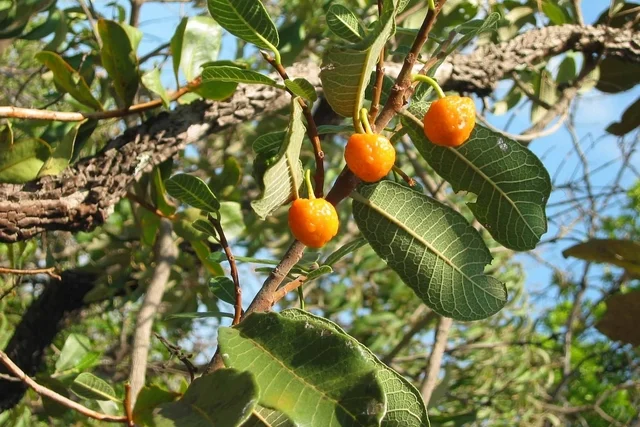
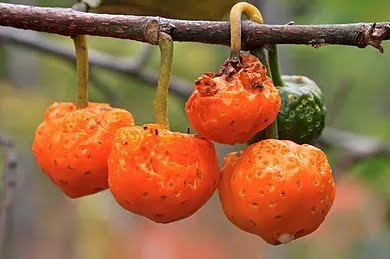

Características da planta
Árvore com tronco sinuoso e irregular que pode atingir até 8 m de altura. Casca acinzentada e espessa. Folhas rígidas com pilosidade esbranquiçada na face inferior. Flores aglomeradas em uma haste de formato arredondado presa no ponto de inserção das folhas nos ramos. Floração variável concentrando-se nos meses de agosto a novembro.
Outros nomes populares: mamica-de-cadela, boloteiro, faveira, pão-de-arara, algodão-doce, algodãozinho, amoreira do mato, conduri, conoru, inhare, ipê-do-sertão, irerê, mama-cachorra, mama-de-cachorro, mururerana.
Fruto
Espécie silvestre, propaga-se através de sementes.
A mama-cadela é espécie espontânea e muito difundida no domínio dos cerrados do Brasil Central, ocorrendo em formações arbóreas de bom porte.
Essa fruta, também chamada de mamica-de-cadela, é pródiga de associações e lembranças, a começar por este seu nome, que é apenas mais uma entre suas várias denominações populares.
Para alguns autores, ao contrário do que poderia parecer, o nome mama-cadela não seria uma referência à semelhança de forma que esse fruto guardaria com a teta da cadela, uma vez que são bem diferentes.
Vegetal e animal aproximam-se pela maneira com que os frutos da mama-cadela ficam pendurados ao longo dos ramos da árvore: dispostos um ao lado do outro, em galhos compridos, quase horizontais, os frutos da mama-cadela fazem lembrar, na verdade, a disposição das tetas na barriga de uma cadela.
Para estreitar ainda mais essa semelhante, é freqüente verem-se pequenos animais do cerrado subindo sobre as patas traseiras para poderem alcançar e sorver do sumo da mama-cadela, cena que se assemelha à de filhotes querendo mamar.
Quando maduros, os frutos da mama-cadela passam de verde-escuro para amarelo forte, quase alaranjado, e contem uma boa quantidade de suco adocicado.
Apesar de pequenos e de apresentarem uma polpa pegajosa, esses frutos são muito procurados, especialmente pelas crianças, e costumam ser chupados, sorvidos e mastigados como goma de mascar até que reste apenas um resíduo macilento sem graça. Pimentel Gomes chega a afirmar que a mama- cadela é uma espécie de “chiclete natural”.
Mama-Cadela

A mama-cadela (mamica-de-cadela, mururerana, irerê, algodão-doce, algodãozinho) pertencente à família das Moráceas é uma árvore encontrada nas regiões de Cerrado do Brasil.
Possui tronco sinuoso e irregular com casca acinzentada e espessa podendo atingir até 8 m de altura.
As folhas são rígidas com manchas esbranquiçadas na face inferior. As flores são aglomeradas em uma haste de formato arredondadas presa no ponto de inserção das folhas, nos ramos. A floração é variável concentrando-se nos meses de agosto a novembro.
O fruto é pequeno, preso à haste carnosa formando uma estrutura globosa, de coloração alaranjada quando maduro.
A árvore é de espécie silvestre e propaga-se através de sementes.
A mama-cadela é espécie espontânea e muito difundida no domínio dos cerrados do Brasil Central, ocorrendo em formações arbóreas de bom porte. Recebe este nome pela maneira com que os frutos da mama-cadela ficam pendurados ao longo dos ramos da árvore: dispostos um ao lado do outro, em galhos compridos, quase horizontais, os frutos da mama-cadela fazem lembrar, na verdade, a disposição das tetas na barriga de uma cadela.
Para estreitar ainda mais essa semelhança, é freqüente verem-se pequenos animais do cerrado subindo sobre as patas traseiras para poderem alcançar e sorver do sumo da mama-cadela, cena que se assemelha à de filhotes querendo mamar.
Quando maduros, os frutos da mama-cadela passam de verde-escuro para amarelo forte, quase alaranjado, e contém uma boa quantidade de suco adocicado. Apesar de pequenos e de apresentarem uma polpa pegajosa, esses frutos são muito procurados por animais silvestres, especialmente pássaros e pequenos mamíferos.
As crianças, quando crescias em fazendas próximas a áreas de cerrado também costumam comer os frutos da mama-cadela, mastigando-os como goma de mascar até que reste apenas um resíduo macilento sem graça. Tal resíduo tem uma consistência e aparência semelhante às do algodão, da esponja ou da estopa e, por esse motivo, algodãozinho e algodão-doce são, também, outras de suas denominações populares.
Descrição e característica da planta

É uma planta perene, arbórea, com 4 a 5 metros de altura. Ela ocorre em várias regiões do Brasil, principalmente nas áreas remanescentes dos cerrados, e abrangem o Distrito Federal e os estados de Amazonas, Bahia, Ceará, Goiás, Maranhão, Minas Gerais, Mato Grosso, Mato Grosso do Sul, Pará, Piauí, São Paulo e Tocantins.
As folhas são simples, coriáceas (aspecto de couro), caducas (caem durante o inverno ou na época de longa estiagem nas regiões de clima quente), a forma é elíptica, com cerca de 16 centímetros de comprimento por 7 centímetros de largura e nervuras mais claras. As flores são pequenas, sem pétalas, monóicas (têm flores masculinas e femininas separadas na mesma planta), autoférteis e emitidas nas axilas das folhas com os ramos.
Os frutos são globosos, com 2 a 3 centímetros de diâmetro, cheios de calosidades, que lembram verrugas, polpa amarela, quando maduros, doces, suculentos e fibrosos. As condições favoráveis ao seu desenvolvimento e frutificação são: temperatura amena a quente, solos profundos, bem drenados, não é exigente em fertilidade do solo e adaptada ao longo período sem chuva durante o inverno, porque apresenta um sistema radicular bem desenvolvido e profundo nos solos do cerrado. A propagação é feita através de sementes e por estacas de raiz.